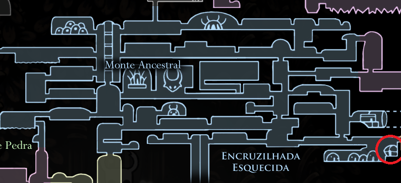

Mantém seu portador firme, previnindo-o de recuar quando atingir um inimigo com o Ferrão. Permite que se mantenha firme e continue atacando.

Corpo Firme
Pode ser encontrado na loja de Salubra, na Encruzilhadas Esquecidas,
por 120 Geo.
